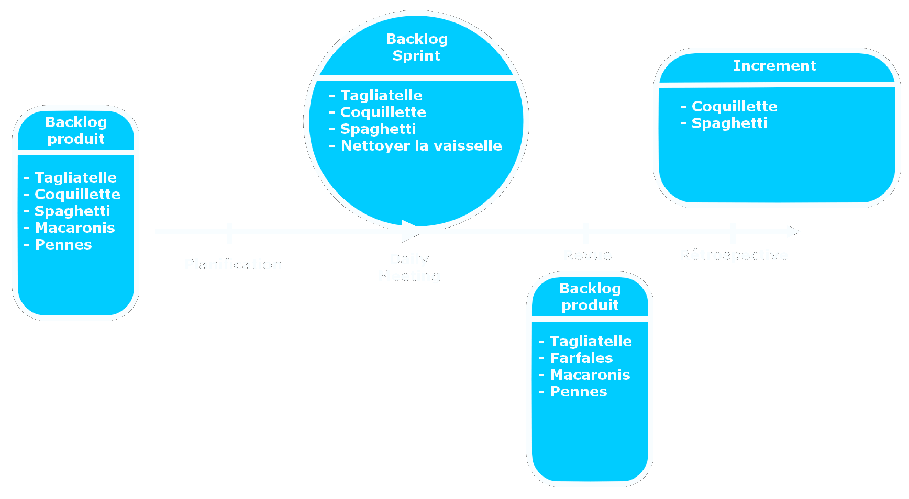

(Re)découvrir 4 frameworks agiles en moins de 20 minutes
Scrum & Add-ons
Exemple d'illustration :
Faisons les présentations, voici Mario
Mario est l'heureux propriétaire du Pasta Mario, un atelier artisanal de production de pâtes italiennes qu'il gère avec son équipe.
Dernièrement, les affaires marchent plutôt bien pour Mario, et son carnet de commandes est plein !
Face à cet afflux de commandes, Mario se posent de plus en plus de questions sur l'évolution de son atelier.
1ère question de Mario :
"Comment s'assurer d'améliorer continuellement la production et la qualité de nos produits ?"
Une solution envisageable
Scrum
Scrum - Les rôles
Il y a 3 rôles décrit par le guide SCRUM :
- Le Product Owner : Il est responsable de la valeur du produit fini
Dans notre exemple, Mario est le mieu placé pour ce rôle car il connait parfaitement ses produits et comment satisfaire les clients - L'équipe de production : responsable d'amener chaque incrément au statut "Fini"
Dans notre exemple, il s'agit de l'équipe du Pasta Mario - Le Scrum Master : facilitateur au service de l'équipe et responsable de la bonne application de Scrum
Dans notre exemple, c'est un rôle à créer et qui peut éventuellement être tenu par un prestataire
Petite précision : l'équipe est auto-organisée, ce qui implique qu'il n'y ait pas de lien hiérarchique entre ces rôles, la responsabilité de l'incrément étant portée par l'équipe entière.
Scrum - Les événements
Le coeur de Scrum est le Sprint. Un Sprint étant une durée (1 mois max) au cours de laquelle un incrément d'un produit fonctionnel et potentiellement publiable est créé.
4 événements ont lieu lors du Sprint :
- La planification : en début de sprint, définition du contenu de l'incrément et de comment le réaliser
- Les daily meetings : chaque jour, inspection de l'état de l'incrément et de comment le faire avancer aujourd'hui (max 15min)
- La revue de Sprint : à la fin du sprint, inspection et démonstration de l'incrément réalisé et si nécessaire adaptation du backlog produit
- La rétrospective : après la revue, auto-inspection de l'équipe, de ses process et outils, puis création d'un plan d'amélioration pour le prochain sprint
Scrum - Les artefacts
Les artefacts représentent soit du travail, soit de la valeur. Ils fournissent de la transparence et des opportunités d'inspection et d'adaptation
- Le backlog produit : Liste ordonnée de tous les éléments identifiés comme étant nécessaires au produit. Le Product Owner le fait évoluer en même temps que le produit
- Les backlog sprint : Liste cumulative des éléments sélectionnés pour le sprint, des actions définies en rétrospective, et des tâches nécessaires pour livrer le sprint. L'équipe de production le fait évoluer lors du daily meeting
- L'incrément : Liste des éléments finis lors du sprint. L'incrément doit toujours être dans un état publiable
- La Definition of Done (DOD) : Artefact de transparence permettant d'estimer la vélocité de l'équipe et de distinguer clairement les tâches finies de celles qui ne le sont pas
Scrum - Schéma
2ème question de Mario :
"Notre équipe est très efficace et volontaire, peut-être même un peu trop car je sens que l'équipe s'épuise. D'ailleurs le livreur n'arrive plus à gérer les livraisons tout seul !"
"Nous aimerions identifier plus facilement là où un recrutement est nécessaire tout en étant certain de pouvoir assurer les commandes sur le long terme avec l'équipe existante. Comment peut-on s'en sortir ?"
Une solution envisageable
Kanban dans Scrum (Scrumban)
Scrumban par rapport à Scrum
Tous les rôles, événements et artefacts définis par Scrum sont conservés (c'est ce qui différencie Scrumban de Kanban)
Le principe fondamental de Kanban est l'inversion du flux de travail : généralement le travail s'effectue en flux poussé (le rythme est donné par l'étape qui précède) là où Kanban nécessite un flux tiré (le rythme est donné par l'étape qui suit)
En supplément de Scrum, il faut :
- Définir un workflow précis (start to finish) représentant chaque étape nécessaire à la production d'un incrément
Par exemple, réunir les ingrédients, cuisiner, mettre en carton, livrer les clients - Définir une limite du Work In Progress (WIP) sur chaque étape du workflow afin d'identifier facilement ce qui bloque l'évolution du WIP
Dans l'exemple,il serait plus rentable de limiter la production à ce qui peut être livré pour éviter le gâchis. La mise en carton peut Les cuisiniers pourraient peut-être se charger de la mise en carton ? - Définir des métriques permettant d'identifier ce qu'est un blocage : durée habituelle d'un cycle, nombre de tâches accomplies en un cycle, âge de chaque tâche, nombre de WIP actuel, Service Level Expectation (SLE) par exemple par exemple 85% du sprint accompli en 8j
Utiliser Scrumban
La gestion de Scrumban nécessites plusieurs actions ou attentions au quotidien, incluant au moins de :
- Répondre rapidement à ce qui bloque les tâches (ça doit être la priorité de l'équipe)
- S'assurer que les tâches sont prises au même rythme qu'elles sont finies
- S'assurer qu'une tâche ne prend pas de "l'âge" de façon inutile
- Eviter d'accumuler des tâches dans une étape si cela n'est pas strictement nécessaire
Toutes ces actions/attentions permettent d'assurer une continuité de production
Scrumban - Schéma
TODOOOOO3ème question de Mario :
"Depuis la mise en place de ScrumBan, tout roule pour le mieux et nous avons même eu une nouvelle idée révolutionnaire : proposer des pâtes à la bolognaise !"
"Notre équipe spécialisée pour la production des pâtes est prête à attaquer ce nouveau produit, et nous avons recruté suffisament pour monter une équipe qui s'occupera des légumes et une autre équipe pour la préparation de la viande"
"Toutes ces équipes sont très efficaces dans leur domaine respectif, mais personne ne sait faire des pâtes à la bolognaise. Comment faire pour être sûr qu'à la fin, nous n'obtiendrons pas juste des pâtes aux légumes et à la viande mais bel et bien des pâtes à la bolognaise ?"
Une solution envisageable
Nexus
Nexus - Organisation
Nexus permet la coordination de plusieurs équipes SCRUM travaillant sur un produit commun
Une équipe Nexus est créée en supplément des équipes SCRUM afin de gérer la coordination du projet et de réduire les dépendances entre les équipes.
Cette équipe a son propre Scrum master, son propre product owner, et sa propre équipe de production composée de "référents experts" de chaque équipe SCRUM (leur rôle dans Nexus est prioritaire par rapport à leur rôle dans leur équipe Scrum)
Nexus par rapport à Scrum
Dans Nexus, il n'y a plus qu'un seul backlog produit qui appartient à l'équipe Nexus
Les Daily Scrum Nexus permettent de s'assurer que le travail est régulièrement intégré, d'identifier les nouvelles dépendances ou impacts sur les équipes et d'identifier les informations à partager entre les équipes.
Un événement supplémentaire, le "Cross-Team Refinement" (ou "Raffinement"), fait avant la planification, permet de minimiser au maximum les dépendances entre les équipes, et d'identifier à quelle équipe devrait être affectée chaque tâche du backlog
La rétrospective Nexus se passe en 3 temps : identifier les problèmes qui ont eu un impact sur plus d'une seule équipe, tenue des rétrospectives de chaque équipe (pendant lesquelle les problèmes communs sont également discutés), puis détermination et communication des actions retenues parmis celles remontées par chaque équipe (notion d'intelligence collective)
Nexus - Schéma
TODOOOOO4ème question de Mario :
"Les pâtes à la bolognaise sont un succès. D'ailleurs un investisseur nous a contacté pour nous permettre d'ouvrir des franchises dans d'autres pays !"
"Cet investisseur est très sceptique sur les méthodes agiles et les frameworks scrum. Pour lui, ce n'est qu'un effet de mode, et il vaudrait mieux produire plutôt que de passer autant de temps en réunion."
"Comment convaincre cet investisseur que les changements apportés via Scrum et ses Add-ons sont bénéfiques tout en accompagnant les franchises dans leur mise en place des process agiles ?"
Une solution envisageable
Evidence-Based
Evidence-Based - Le principe
Evidence-Based permet avant tout d'accompagner le changement.
Comme son nom l'indique, le principe de ce framework est de se baser sur les preuves. Plutôt que d'accepter un changement parce que quelqu'un le décide, ce framework/add-ons permet d'apporter les preuves que le changement a des effets bénéfiques
Ce framework est à la fois un ajout à Scrum et un framework à part entière : il pourra par exemple être utilisé afin d'accompagner la mise en place de Scrum
Evidence-Based - Organisation
Tout comme Nexus, Evidence-Based nécessite une équipe dédiée. Chaque membre de cette équipe a le même "titre", peu importe son rôle dans l'entreprise (il n'y a pas d'exception, même pour le DRH ou le PDG)
Si nécessaire, Evidence-Based peut être organisé en plusieurs équipes traitant chacun un niveau du changement (entreprise, domaine, équipe) mais en aucun cas ces équipes ne doivent être organisée par métier (un changement sur un métier affectant presque systématiquement d'autres métiers : par exemple, si les développeurs changent d'approche de développement, les offres d'emploi et les campagnes marketing auprès des clients finaux devront très probablement également être mises à jour)
Evidence-Based par rapport à Scrum
Un événement supplémentaire,l'évaluation, se tenant avant la revue, permet d'identifier et de mettre à jour les indicateurs nécessaires à l'apport de preuve du bénéfice du changement oppéré
Les artefacts d'Evidence-Based sont les suivants :
- Le Practice Backlog : contenant chaque pratique que l'on souhaite mettre en place
- Le Sprint Backlog : contenant les pratiques que l'on souhaite mettre en place lors de cette itération
- L'Evaluation Backlog : contenant chaque pratique qui nécessite d'être évaluée ou renforcée
- L'Increment of Change : contenant les pratiques qui ont permis un changement effectif à la fin du sprint
Evidence-Based - Les preuves
Les preuves sont organisées en 4 catégories :
- Unrealized Value (UV) : Valeur potentiellement réalisable si l'organisation pouvait répondre à toutes les attentes des clients. Exemple d'indicateurs : part de marché, écart entre la satisfaction attendue et la satisfaction réelle des utilisateurs, ...
- Current Value (CV) : valeur du produit actuel. Exemple d'indicateurs : satisfaction des clients, des employés, ratio coût/bénéfice des produits, ...
- Ability to Innovate (A2I) : Capacité de répondre aux besoins des clients. Exemple d'indicateurs : dette technique, nombre de fonctionnalités utilisés, ...
- Time to Market (T2M) : Délai de délivrance d'un nouveau produit. Exemple d'indicateurs : fréquence de livraison, délai de correction, ...
- En supplément, on pourra évaluer l'Agility Index, qui est un indicateur unique représentant ces 4 catégories et l'Agility Acceleration, représentant la vitesse à laquelle une organisation peut opérer un changement. Plus l'Agility Acceleration est faible, plus le coût de la mise en place d'un changement sera grand
Une liste plus complète des indicateurs est disponibles en annexe du guide officiel
Evidence-Based - Schéma
TODOOOOOInfos supplémentaires
Les différents Add-ons sont compatibles entre eux, par exemple, rien n'empêche d'organiser des équipes Scrumban en Nexus avec de l'Evidence-Based pour apporter la preuve de l'efficacité de "ce combo"
Chaque organisation a ses spécificités, Scrum et ses add-ons ne sont peut-être pas les plus adaptées.
Les premières étapes de la mise en place d'un framework Agile sont donc de faire un état des lieux de l'existant et de définir les besoins de l'organisation pour s'assurer de proposer ou d'adopter le framework le mieux adapté à la situation.
Pour aller plus loin :
- Les guides officiels sont disponibles gratuitement sur scrum.org
- Pour Evidence-Based, il y a 2 documents, dont un qui décrit de façon plus complète les indicateurs et leurs utilisations.
- Il existe beaucoup d'autres frameworks agiles mono équipe :
XP, Crystal Clear, Adaptive Software Development (ASD), etc... - Et également pour le multi-équipes :
Spotify, Safe, Disciplined Agile, LeSS, Scrum@Scale, etc... - Si vous les souhaitez, la certification "Scrum Fundamentals Certified" peut être passée gratuitement en ligne via ScrumStudy
Merci de votre attention
Des questions ?

Sources disponibles sur github.com/Jorg722